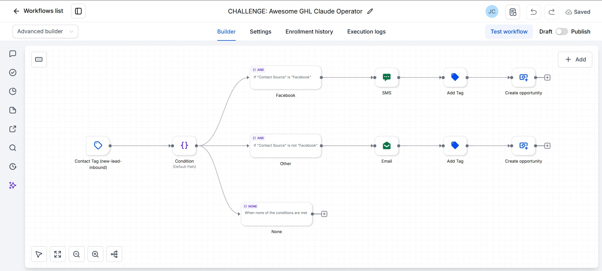
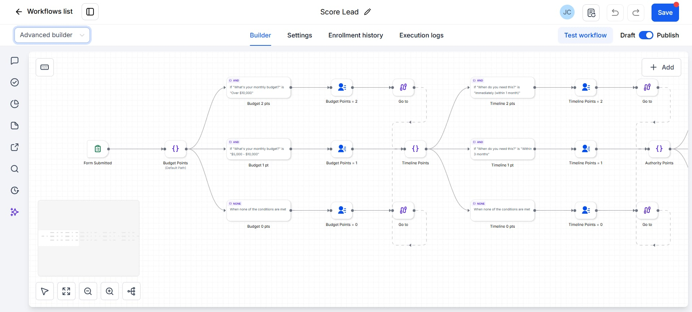
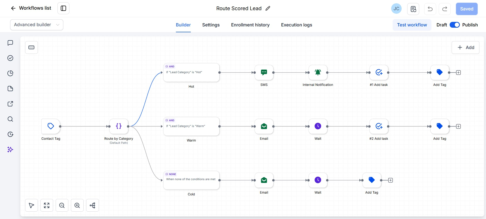

I build automations that connect different apps and tools so teams spend less time on repetitive work. This usually means setting up triggers, moving data between systems, and keeping everything in sync automatically.
- Built automations that connect different apps, trigger actions, and remove repetitive manual steps.
- Set up and configured CRM systems, including pipelines, statuses, and automation rules.
- Connected tools and services so data and tasks move between them automatically.
- Helped teams improve task tracking, lead management, and day-to-day operations.
A few automations I've built




